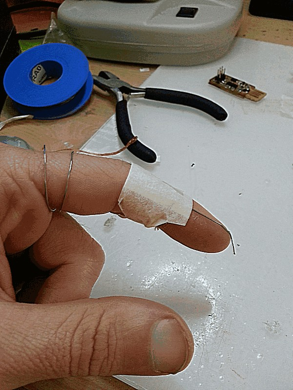

David Montenegro
FAB ACADEMY 2015
Assignments | Final Project | About | Contact
02_18 Electronics Production
On wednesday 02.18.2015 we’ve got the fourth online lesson with Neil Gershenfeld.
The next lessons can be found on the Fab Academy account on Vimeo.
Here some tutorials FabLab Using the modela to Mill PCBs
For this week the assignment was
** make the FabISP in-circuit programmer **
(more informations can be found at the bottom of this page)
Set up
I referred to this tutorial. It’s complete and clear.
Making circuit since here has revealed quite simple.
It consist substantially of 4 steps: mill the board, solder the components, test the circuit and upload the firmware.
Every single step is quite simple, but requires a lot of attention because of the tiny dimension of what we use. For this reason setup, in my humble opinion, is the most important part of the job: if well done can reduce drastically mistakes and fixing.
Milling
With the fabmodules it’s very easy to use the MX-20, but you have to keep in mind just few things:
-
set correctly the board at the base to have always the same height so the mill can work properly.
-
pay attention at the sound: it has to be constant and not too loud; if too loud check all the milling set up process.
-
you’re making a prototype, just one piece: don’t be hasty and you’ll make it just once (or maybe twice, not more).

Taking my time for the set up this has been the result at the first attempt. Not bad.

Soldering
One more time set up comes first. Instead of search for the correct component from the blister every time I searched once at the beginning. To not mix components I’ve cut some slots to label with the relative component’s code.


To optimize the operations I tied to my index a piece of solder to have it always ready, and it has revealed fairy comfortable. That’s the quintessence of wearable device!! :D


Upload the firmware
To upload the firmware on the FabISP I need another ISP programmer to bridge the FabISP with computer trough a 6pins ribbon bus.
I used the firmware used by Andy.
What I’ve done
This

That’s it.
Note
To program this FabISP you have to solder a jumper but on this version you have two jumpers; you have to solder the one closer to the micro-controller, not the other one near the keychain hole. If you solder the wrong jumper you simply wont be able to program the FabISP.